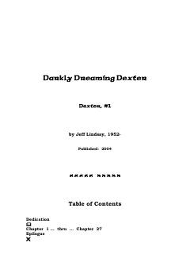

DDKunduzi sud eksperti, kechasi esa jinoyatchilarni ovlovchi seriyali qotil haqidagi triller.
Dexter Morgan kunduzi sud-tibbiyot eksperti, kechasi esa o'zining qorong'u ehtiyojlariga bo'ysunib, jinoyatchilarni ovlaydigan seriyali qotildir. U o'zining 'qorong'u yo'lovchisi' bilan birga yashab, o'ziga xos axloqiy kodeks asosida harakat qiladi. Ushbu asar mashhur Dexter serialining asosiy manbasi hisoblanadi.